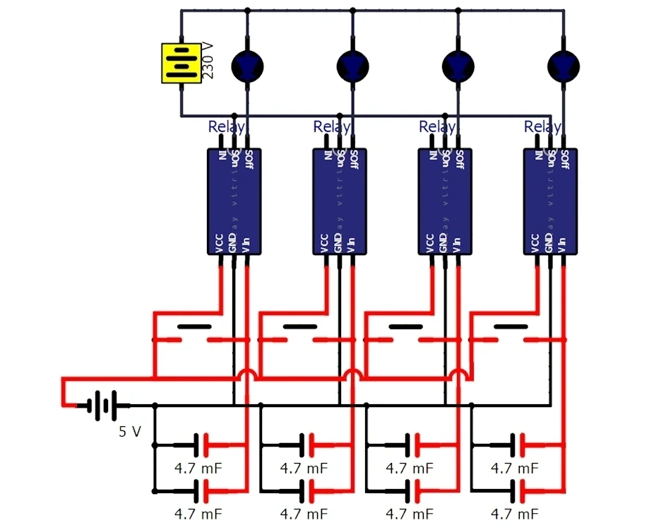
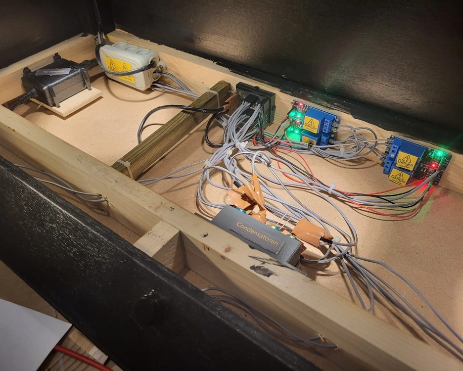

Vitrine sterrenwacht Copernicus
Omschrijving
Toen sterrenwacht Copernicus in 2023 haar tentoonstelling vernieuwde, hadden ze enkele nieuwe expositiestukken nodig, waaronder een vitrine om vier planeten tentoon te stellen die beginnen draaien wanneer er een licht op schijnt. Ik heb een vitrine ontworpen en gebouwd met lampen die voor een korte tijd aan blijven om elk van de planeten rond te laten draaien. Ik ben tevreden over hoe eenvoudig het systeem is: de lampen werken gewoon op netstroom en de aansturing werkt met een analoog 5v systeem. Als er op de knop gedrukt wordt, wordt een set condensatoren opgeladen. Wanneer de knop losgelaten is, blijven de relais geactiveerd terwijl deze langzaam leeg stromen, totdat de spanning te laag wordt.

